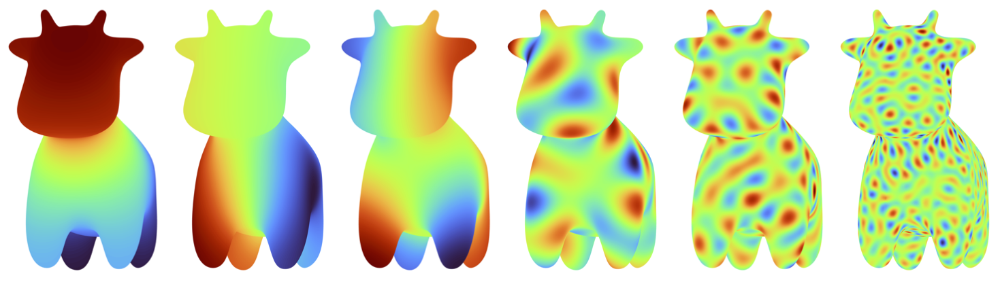

PAUL BECKMAN
Peter O'Donnell Jr. Postdoctoral Fellow
Oden Institute
University of Texas at Austin
paul dot beckman at austin dot utexas dot edu
CV
Google
Scholar
GitHub
ABOUT ME
I am currently a Peter O'Donnell Jr. Postdoctoral Fellow at the Oden Institute at UT Austin working with Gunnar Martinsson and Joe Kileel.
My research focuses on using ideas from classical and modern numerical analysis to develop fast algorithms for problems in statistics and data science. For example, I'm interested in the development of quadratures, fast transforms, and structured matrix and tensor methods for applications in Gaussian processes, spectral estimation, mixture models, etc.
Before joining Oden, I completed my PhD in Mathematics at the Courant Institute at New York University advised by Mike O'Neil and supported by the DOE CSGF. I received my undergraduate degree in Computational and Applied Mathematics at the University of Chicago, and worked as a math and statistics researcher at Argonne National with Mihai Anitescu, Michael Stein, and Chris Geoga. I've also held temporary positions at Lawrence Berkeley National Lab working with Xiaoye Sherry Li, Yang Liu, and Chao Yang.
PUBLICATIONS AND PREPRINTS
David Persson, Paul G. Beckman, Tyler Chen, Diana Halikias, Christopher Musco. “A recursive butterfly factorization with optimality guarantees.” arXiv preprint arXiv:2607.29361 (2026).
Paul G. Beckman, Samuel F. Potter, Michael O'Neil. “A Butterfly-Accelerated Manifold Harmonic Transform.” arXiv preprint arXiv:2605.21828 (2026).
Paul G. Beckman, Michael O'Neil. “A Nonuniform Fast Hankel Transform.” SIAM Journal on Scientific Computing 48, no. 2 (2026): A784-A803.
Christopher J. Geoga, Paul G. Beckman. “Fast nonparametric spectral density estimation from irregularly sampled data.” arXiv preprint arXiv:2503.00492 (2025).
Paul G. Beckman, Christopher J. Geoga. “Fast Adaptive Fourier Integration for Spectral Densities of Gaussian Processes.” Statistics and Computing 34, no. 6 (2024): 217.
Paul G. Beckman, Christopher J. Geoga, Michael L. Stein, and Mihai Anitescu. “Scalable Computations for Nonstationary Gaussian Processes.” Statistics and Computing 33, no. 4 (2023): 84. (2023).
David B. Williams-Young, Paul G. Beckman, and Chao Yang. “A Shift Selection Strategy for Parallel Shift-Invert Spectrum Slicing in Symmetric Self-Consistent Eigenvalue Computation.” ACM Transactions on Mathematical Software (TOMS) 46, no. 4 (2020): 1-31.
TEACHING
| Semester | Number | Title |
|---|---|---|
| Fall 2026 | M 427J | Differential Equations with Linear Algebra |
| Fall 2026 | M 305G (TPEI) | Preparation for Calculus |
| Spring 2026 | M 408K (TPEI) | Differential Calculus |
I currently teach credit-bearing college math courses to incarcerated students in Lockhart, TX through the Texas Prison Education Initiative (TPEI).
In New York from 2020-2025, I was an instructor with GOSO and the Petey Greene Program, which are fantastic organizations supporting the educational goals of currently and formerly incarcerated individuals from high school equivalency through college.
I'm always happy to chat about these programs, so feel free to reach out!
